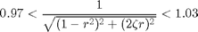
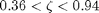

Contents
% Joel Lubinitsky % MAE 321 - HW9.2 % 03/25/15 clear all close all clc
Problem 2:
The damping coefficient for a particular accelerometer of the type illustrated in figure 2.26 of the book is 45 N s/m. It is desired to accurately measure accelerations in a frequency range of 0 to 75 Hz with a maximum error of only 3%. Design the rest of the device (m and k) to achieve this.
Find:
Known
coefficientDamping = 45; % Ns/m frequencyMaxHz = 75; % Hz errorMax = 0.03;
Calculations
For max error of 3% @ r = 0.2:


Solving simultaneous equations:
frequencyMaxRad = frequencyMaxHz .* 2 .* pi; ratioFrequency = 0.2; stiffness = (frequencyMaxRad .* coefficientDamping) ./ ratioFrequency mass = (coefficientDamping .^ 2) ./ stiffness
stiffness =
1.0603e+05
mass =
0.0191
Results
The required system can be designed using a 0.0191 kg mass and a spring of stiffness 106030 N/m.